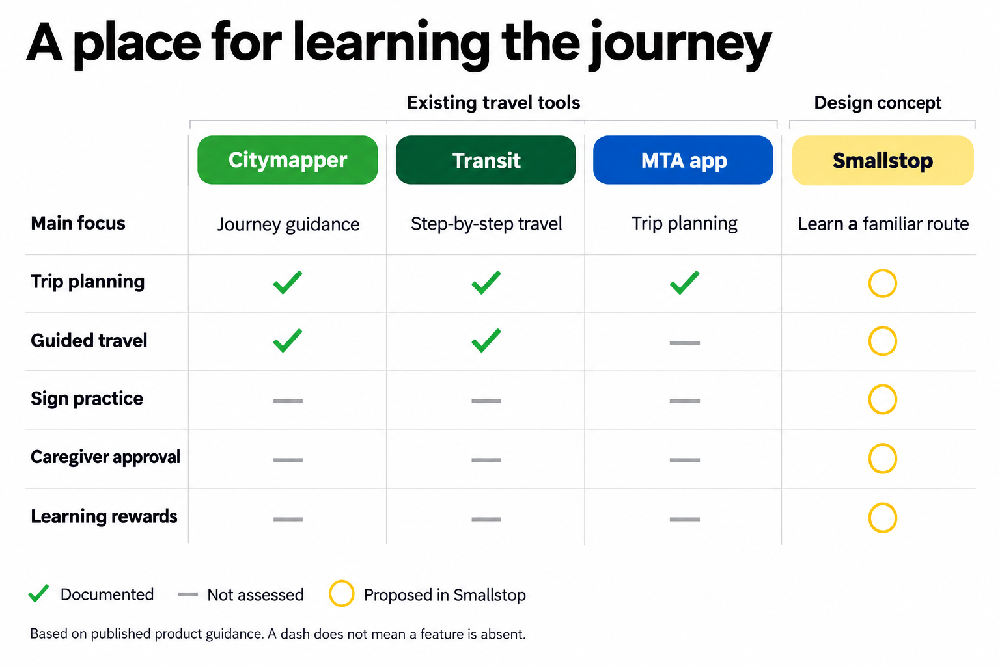
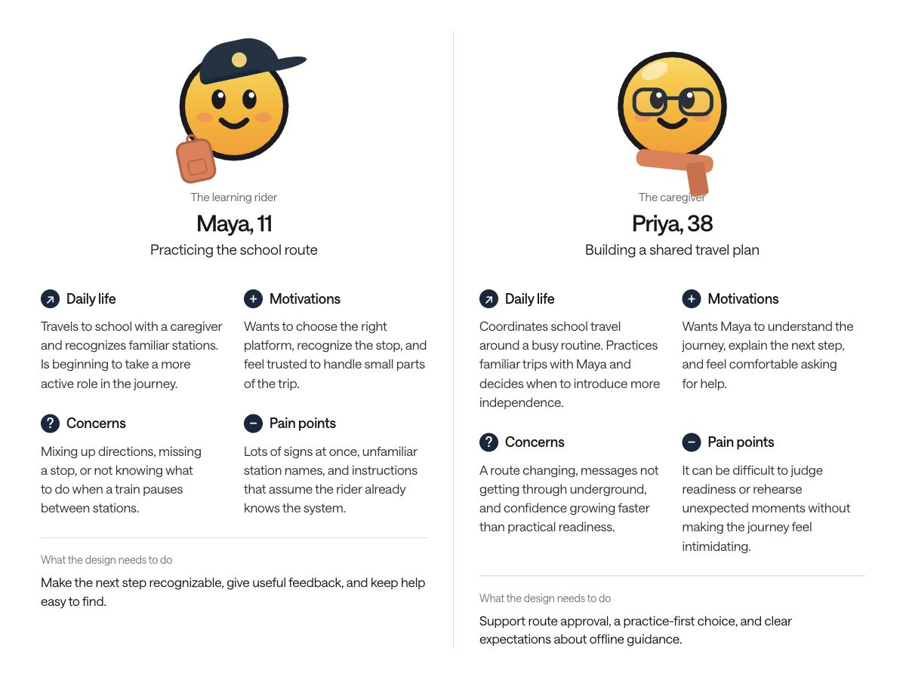

Responsibilities
Define the experience, organize the rider and caregiver flows, develop the interface and visual identity, and communicate key interactions through prototypes and motion.
A little confidence for a very big city.
A familiar subway route still asks a child to make unfamiliar decisions.
Connected practice, ride guidance, and reassurance in one companion, with a caregiver involved from the start.
Build the experience around one clear next step, then make room for help.
Mobile product concept · 2026
Developed from my Ride Ready wireframes
[Figma, HTML / CSS, JavaScript, Python, FFmpeg]

A subway companion for growing independence.
Smallstop began as Ride Ready: a mobile concept for children learning the New York subway with a caregiver. The challenge is to turn a familiar trip into a repeatable learning experience—from recognizing a platform sign to knowing when to ask for help.
Define the experience, organize the rider and caregiver flows, develop the interface and visual identity, and communicate key interactions through prototypes and motion.
Problem framing · Information architecture · User flows · UI design · Visual storytelling · Interaction design · Motion prototyping
Figma for the source wireframes. HTML, CSS and JavaScript for the interactive prototype. Python and FFmpeg for feature films. AI image generation for concept photography.
A new name and identity, connected product flows, an interactive demo, looping microinteraction films, and a visual case study.

One familiar ride at a time.

A route is more than a line on a map. It asks a child to interpret signs, track progress, and respond when something feels unexpected. Smallstop focuses on those moments, with a caregiver helping set the route and the pace.
Working hypotheses from the wireframes, to validate with children and caregivers.

Unfamiliar signs and a busy platform can make a simple route feel complicated. Practice builds recognition; a stop counter keeps the next action in focus.

An unexpected stop can unsettle a new rider. Reassurance stays close, while caregivers help decide when to practice and when to try a little more independence.
PrepareHow might we help children recognize the right cues before they reach the platform?
ReassureHow might we make the next action clear when the journey feels unfamiliar?
GrowHow might we support independence while keeping caregivers involved?

Smallstop connects practice at home with guidance on the train. A child learns the signs, follows a familiar route, and has a clear place to turn when something feels unexpected.
Caregivers help choose the route and decide when to practice together. Progress comes from familiarity, one ride at a time.
Four parts of the same journey, from preparation to a little more confidence.
Try route decisions before reaching the platform.
Keep a familiar route and a clear stop count in view.
Reach reassurance and return to the ride.
Collect station stamps as familiar journeys add up.
A focused review of published product guidance informed this comparison. Smallstop’s distinction is a proposed learning experience for children and caregivers, not a claim that other tools lack every related feature.

Two provisional profiles for the concept. Names, ages, and situations are illustrative; they are not research participants or validated findings.


The learning rider
Travels to school with a caregiver and recognizes familiar stations. Is beginning to take a more active role in the journey.
Wants to choose the right platform, recognize the stop, and feel trusted to handle small parts of the trip.
Mixing up directions, missing a stop, or not knowing what to do when a train pauses between stations.
Lots of signs at once, unfamiliar station names, and instructions that assume the rider already knows the system.
Make the next step recognizable, give useful feedback, and keep help easy to find.
The caregiver
Coordinates school travel around a busy routine. Practices familiar trips with Maya and decides when to introduce more independence.
Wants Maya to understand the journey, explain the next step, and feel comfortable asking for help.
A route changing, messages not getting through underground, and confidence growing faster than practical readiness.
It can be difficult to judge readiness or rehearse unexpected moments without making the journey feel intimidating.
Support route approval, a practice-first choice, and clear expectations about offline guidance.
Five moments connect preparation, guidance, recovery, and reflection.
Where are we going?
Choose a familiar route with a caregiver.What should I look for?
Rehearse signs and direction choices.What happens next?
Follow one step and a stop counter.What can I do now?
Pause, breathe, and find guidance.What did I learn?
Collect a stamp and revisit the route.My Ride, Practice, and Passport anchor the navigation. Help stays within reach, with a direct return to the current trip.
Saved route
Start → Stops → Arrival
Help ↔ Return to rideRoute Quest
Signs → Choice → Feedback
Repeat and build familiarityStation stamps
Journeys → Achievements
See progress over timeCaregiver flow: route request → approve / practice first / not this time
Reading a platform sign, choosing the right direction, noticing your stop: a familiar trip is a sequence of small decisions. The design breaks that sequence into things a child can learn, practice, and recognize.
Before the ride
Practice the exact signs and decisions from a route chosen with a grown-up.
On the way
Show the next step and the stops remaining, without a whole network competing for attention.
When plans change
Keep a consistent help button and plain-language guidance close at hand.
One familiar companion, from the first practice question to the arrival stamp. Tap feedback, changing stop counts, and a quiet breathing cue make the next action clear.
Route Quest turns real decisions into small practice moments. Station-style signs build recognition; feedback explains the choice. The goal is readiness, with a shared practice ride before going solo.
A large counter and a short route strip keep the important information in focus. Underground, a manual “doors opened” button lets a rider follow their saved route without relying on a live location signal.
A stopped train can feel unfamiliar. The help flow lowers the visual noise, offers a breathing cue, and brings the next action forward. Saved guidance stays available; messages to a grown-up would depend on connectivity.
New routes begin with a conversation. A grown-up can approve a request, choose a practice ride together, or say “not this time.” Readiness sets the pace.
Transit lettering, route colors, ticket edges, and passport stamps create a familiar visual language. Warm paper and generous spacing balance the bold signs and confident type.
Clear directions. A friendly voice. Room to breathe.
Color supports the words. It never replaces them.
Start a ride and tap when the doors open. Try a practice question, or take a moment with Dot. This interactive adaptation explores the Figma flow in Smallstop’s new visual identity.
Concept demo · no live transit data or messages
Go on, tap around. Dot’s here.
Compare practice choices with a supervised sign-reading task. Note confusion, explanations needed, and successful recognition.
Use a simulated stopped-train scenario. Observe whether the next action is understood and the ride state remains clear.
Walk through route approval with caregivers. Check expectations about practice, connectivity, and what the app can actually do.
Smallstop brings learning, riding, and reassurance into one familiar system. The design makes space for confidence to grow through repetition, with a grown-up setting the route and the pace.
This is a design concept developed from the Ride Ready wireframes. The next step is to test sign recognition, reading load, and recovery flows with children and caregivers, then validate the offline and transit-data behavior before a real-world pilot.